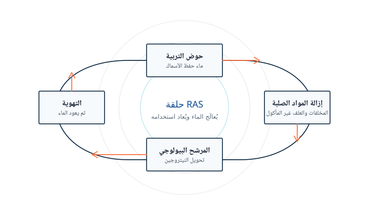
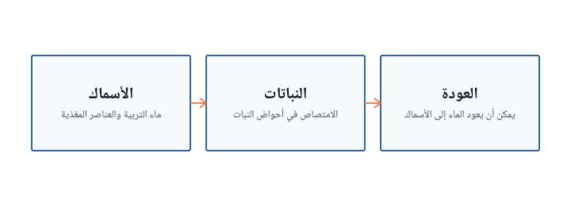

الرئيسية / عمليات الاستزراع الدائري
قاعدة العرض
ورشة يمكن التجوّل فيها، بمقياس تجريبي.
ورشة المصنع الذكي للاستزراع السمكي النباتي في المرحلة الأولى قيد التشغيل أصلًا. يُمارَس الاستزراع المائي الدائري هنا بوصفه تربيةً ورصدًا وإدارةً للنظام — لا بوصفه مصنعًا تجاريًا كبيرًا لتربية الأسماك على اليابسة.
الورشة
ماء يُعاد تدويره، ويُراقَب عن كثب.
في نظام الاستزراع المائي الدائري، يُعالَج ماء التربية ويُعاد إلى الأحواض. تُزال المواد الصلبة، وتُحوَّل المخلفات الذائبة في مرشح بيولوجي، ويُستعاد الأكسجين قبل عودة الماء. الغاية هي ماء مستقر وتربية متأنية، باستخدام ماء أقل بكثير مما يتطلبه تصريف مفتوح غير معاد استخدامه.
تصف الروايات العلنية لورشة نانشا تشغيل نظام النترجة البيولوجي، والمتابعة المستمرة لمؤشرات جودة المياه مثل نيتروجين الأمونيا والنيتريت والأكسجين الذائب ودرجة الحموضة. كما وصفت الشركة منصة إدارة مصايد أسماك مطوَّرة ذاتيًا تُستخدم لرصد الماء، وحفظ سجلات الإنتاج، والتحكّم في المعدات، وإطلاق التنبيهات.

كيف تُنظَّم الحلقة
من الحوض، وحوله، ثم العودة إليه.

حوض التربية
تُحفظ الأسماك في جسم مائي مضبوط، لا في دورة تصريف حوض مفتوح.
إزالة المواد الصلبة
يُخرج العلف غير المأكول والفضلات حتى لا يحمّلا بقية النظام.
المرشح البيولوجي
تحوّل المجتمعات الميكروبية المخلفات النيتروجينية. هذه الخطوة تُبنى ثم تُحفَظ مستقرة.
التهوية
يُستعاد الأكسجين الذائب، وكثيرًا ما يُعاد توازن الغازات، قبل إعادة استخدام الماء.
العودة
يعود الماء المعالَج إلى الحوض. ولا يُضاف ماء عذب إلا بحسب حاجة النظام.
هذا التسلسل وصف عام لممارسة الاستزراع الدائري، موضَّح لزوّار ورشة نانشا. وهو ليس كتالوج معدات معروضًا للبيع بوصفه مصنعًا مغلفًا.


الاستزراع السمكي النباتي
أسماك ونباتات في دائرة واحدة مقاسة.
ورشة المرحلة الأولى هي ورشة مصنع ذكي للاستزراع السمكي النباتي. في هذا الترتيب، يمكن للنباتات أن تمتص العناصر المغذية التي تتراكم في ماء تربية الأسماك، ويمكن أن يعود الماء إلى الأسماك بعد استخدامه على هذا النحو. وتضمّن حدث التشغيل في نانشا بتاريخ 28 كانون الأول/ديسمبر 2023 حفل إسكان لهذا المصنع.

رسم توضيحي للعلاقة، وليس مخططًا مقاسًا لأحواض نانشا.


الاستزراع بالتناوب مع الأحواض الخارجية
الورشة ليست بيئة التربية الوحيدة.
تشمل الأوصاف العلنية للأعمال أيضًا الاستزراع بالتناوب مع الأحواض الخارجية، أي نقل المخزون بين مراحل أكثر كثافة ومراحل قائمة على الأحواض. وهذا جزء من وصف الشركة لعملها، إلى جانب تشغيل الاستزراع الدائري في المصنع وتطوير الحديقة.


المقياس التجريبي
نحو 50 طنًا سنويًا، كما صُمّم للتجربة والرصد.
يصف اعتماد تقييم الأثر البيئي الصادر في 2 شباط/فبراير 2026 (穗南审批环评[2026]10号) مشروع وادي الزراعة في منطقة الخليج بأنه تجارب تربية أسماك ذكية وبحوث رصدية. ويبلغ حجم التربية التجريبية السنوي المصمَّم نحو 100 ألف جين، أي حوالي 50 طنًا.
أما المرحلة الثانية من الحديقة نفسها فهي مخططة كمبانٍ للمنشآت البحثية والثقافية، بمساحة بناء منشورة تبلغ نحو 72,050 مترًا مربعًا. وذلك برنامج مباني. وهو ليس بيانًا لطاقة الحصاد التجاري.
مياه صرف الاستزراع
منشأة إعادة تدوير تبنيها الشركة بصفتها صاحبة المشروع.
في 21 شباط/فبراير 2025 نشرت الشركة مناقصة لمشروع إعادة تدوير مياه صرف الاستزراع بمساحة نحو 38 مو. وكان سقف العطاء 2,084,328.12 رنمينبي. والهدف المنشور هو معالجة 100 طن من مياه صرف الاستزراع و950 كيلوغرامًا من المخلفات الصلبة يوميًا، مع تصنيع المواد الصلبة إلى سماد.
في تلك المناقصة تكون الشركة جهة البناء والطرح. ولا تُظهر الوثيقة، بحد ذاتها، أن الشركة تبيع معدات استزراع دائري مغلفة لمزارع أخرى.